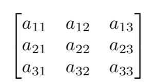
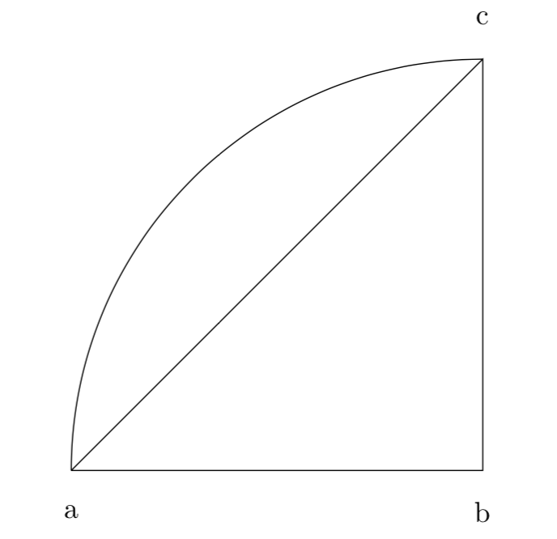
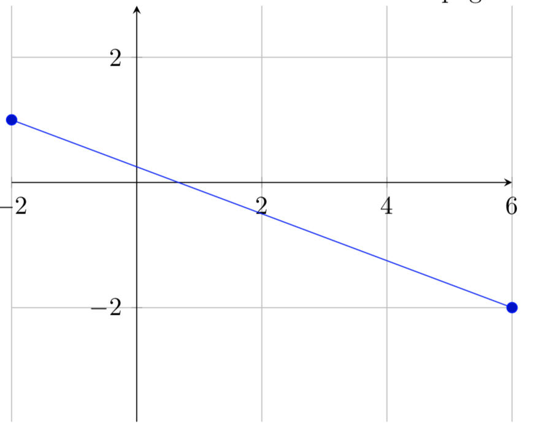

If in other programms, that may seem easier than latex, we want to write a mathematical expression this could result in a lot of time needed to do so, in the other hand even a fairly complex expression won't take much time with Latex.
Let's make an example to clarify:
I would like to invite the reader to write the following formula with Word.
x = φ2
It took roughly five seconds to do it using latex
CODE
and i guess it didn't take much longer to do
same for Word. But this was a simple expression.
Let's now try something more complex:$x=\phi^2 $
F1=1, F2=1, Fn=Fn-1+F n-2 ∀n∈N,n≥2
It still took only a few seconds to write it with Latex
CODE
With other programms this may take way longer
or even be impossible.$F_1=1, F_2=1\quad F_n=F_{n-1}+F_{n-2} \quad\forall n\in \mathbb{N}, n \geq 2$
Now the appeal of using Latex for mathematical papers should be obvious.
Latex, on top of being fast, it is also fairly simpler, in regard of mathematical enviroment, more flexible and more powerful when compared to other writing programms. Not only expression can be represented but also matrices, geometrical figures, graphs and much more.
It is also worth noting that the packages amsmath and tikz are needed for the most complex things that will be shown in this section.
  
Not only the basics necessary to write simple expressions will be explained but also more complex stuff, like how to make matrices, how to plot function on a plane, and how to make geometrical figures. We hope to give enough tools to then be able to write a paper that concern itself with elementary math.
On top of that at the end of each page the reader will find some exercise to check their progress.